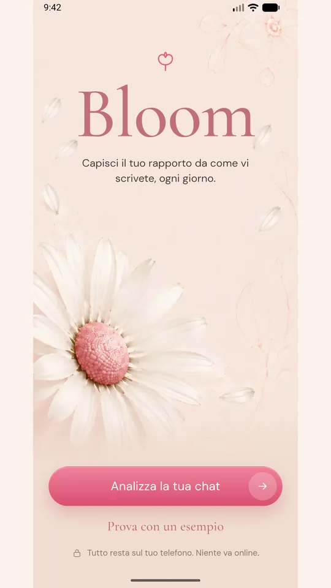
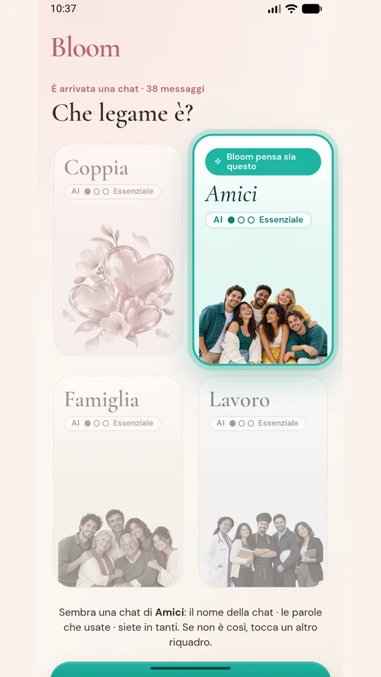
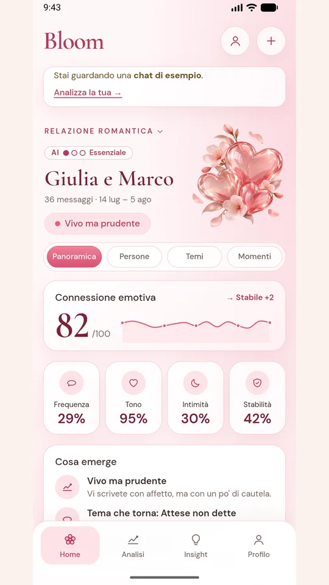
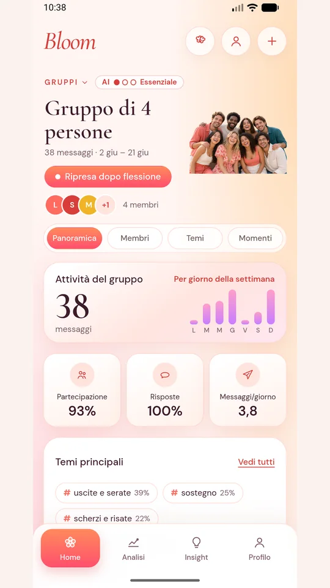
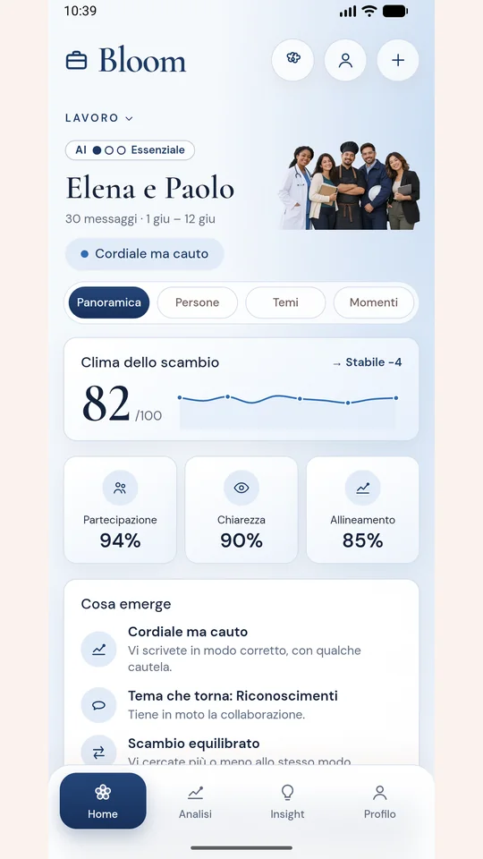
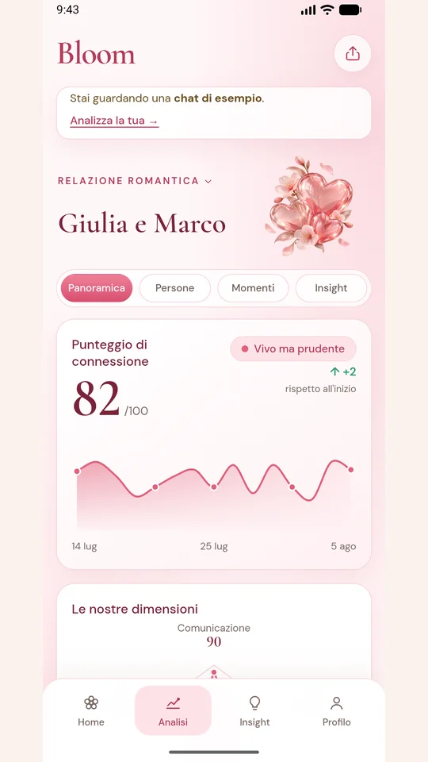
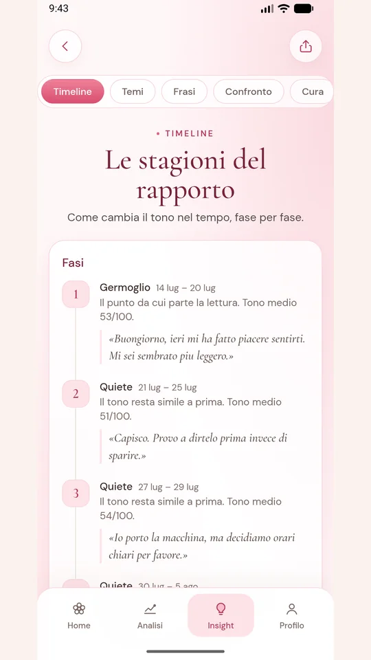
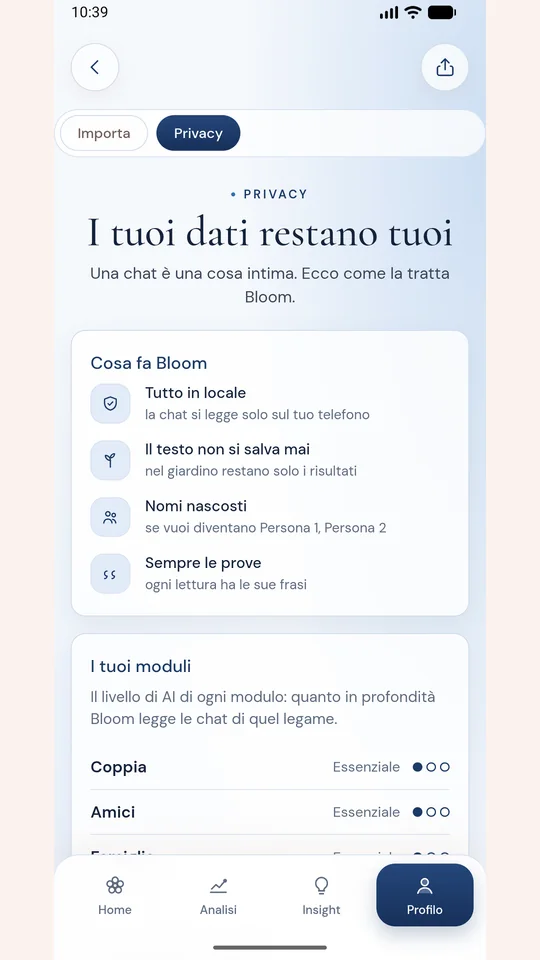

Capire un rapporto da come ci si scrive
Bloom prende una chat esportata da WhatsApp e la trasforma in una lettura del rapporto: quanto è caldo il tono, chi cerca e chi risponde, quali temi tornano, come sono cambiate le cose nel tempo.
Funziona per ogni tipo di legame (coppia, amici, famiglia, lavoro) e anche per le chat di gruppo. Riconosce da sola di che legame si tratta e usa le parole adatte; la scelta finale resta sempre a chi la usa.
Understanding a relationship from how you write to each other
Bloom takes a chat exported from WhatsApp and turns it into a reading of the relationship: how warm the tone is, who reaches out and who replies, which themes come back, how things have changed over time.
It works for every kind of bond (couple, friends, family, work) and for group chats too. It recognises the kind of bond on its own and uses fitting words; the final choice always stays with the user.
Com'è fatta
What it looks like








Schermate realizzate con chat inventate: nomi e frasi non appartengono a persone reali.
Screens made with invented chats: names and sentences do not belong to real people.
Tre passaggi, pochi secondi
- Esporta la chat. In WhatsApp si apre la conversazione, si tocca «Esporta chat», «Senza media» e si sceglie Bloom. Nella versione web si carica il file .zip o .txt.
- Conferma il legame. Bloom riconosce se è una chat di coppia, tra amici, in famiglia o di lavoro e spiega da cosa lo ha capito. Si può sempre cambiare.
- Leggi il risultato. Punteggio e andamento, persone, temi, timeline, proposte per prendersi cura del rapporto. Per chi vuole, una card da condividere: solo numeri ed etichette, mai nomi né frasi.
Three steps, a few seconds
- Export the chat. In WhatsApp open the conversation, tap “Export chat”, “Without media” and choose Bloom. On the web version you upload the .zip or .txt file.
- Confirm the bond. Bloom recognises whether it is a couple, friends, family or work chat and explains what gave it away. You can always change it.
- Read the result. Score and trend, people, themes, timeline, suggestions for taking care of the relationship. If you like, a card to share: numbers and labels only, never names or sentences.
La lettura, pezzo per pezzo
The reading, piece by piece
La chat resta sul telefono
Una chat è una cosa intima, e Bloom è costruita partendo da qui. L'analisi avviene per intero sul dispositivo: l'app Android non ha nemmeno il permesso di accedere a Internet.
- 01Tutto in locale. Nessun server riceve la conversazione.
- 02Il testo non si salva mai. Si possono conservare solo i risultati: punteggi, etichette, andamento.
- 03Nomi nascosti, se vuoi. Diventano «Persona 1», «Persona 2».
- 04Nessun account, nessuna pubblicità. Con un tocco si cancella tutto.
The chat stays on the phone
A chat is an intimate thing, and Bloom is built starting from that. The whole analysis runs on the device: the Android app does not even have permission to access the Internet.
- 01Everything local. No server receives the conversation.
- 02The text is never saved. Only results can be kept: scores, labels, trend.
- 03Hidden names, if you wish. They become “Person 1”, “Person 2”.
- 04No account, no ads. One tap deletes everything.
Un motore deterministico, non un'AI che improvvisa
I punteggi vengono da un motore a regole: la stessa chat dà sempre lo stesso risultato, e ogni segnale è riconducibile a ciò che lo ha prodotto. Il motore di riferimento è scritto in Python; quello che gira nell'app è la sua versione JavaScript, e una serie di test verifica che i due diano lo stesso output.
L'intelligenza artificiale è prevista solo come modulo facoltativo e solo sul dispositivo, a tre livelli:
A deterministic engine, not an AI making things up
Scores come from a rule-based engine: the same chat always gives the same result, and every signal can be traced back to what produced it. The reference engine is written in Python; the one running in the app is its JavaScript version, and a test suite checks that the two produce the same output.
Artificial intelligence is planned only as an optional module, and only on the device, at three levels:
In revisione su Google Play
La versione web è online. L'app Android è in test chiuso su Google Play: l'11 ottobre 2026 scheda dello Store e dichiarazioni sono state inviate a Google per la revisione. Per gli account sviluppatore nuovi Google chiede almeno 12 tester per 14 giorni prima della pubblicazione aperta a tutti.
Vuoi dare una mano? Bastano due passi, spiegati nella pagina per i tester: iscriversi al gruppo di prova, poi installare l'app da Google Play. Serve un telefono Android. Ogni tester in più avvicina la pubblicazione.
Under review on Google Play
The web version is online. The Android app is in closed testing on Google Play: on 11 October 2026 the Store listing and declarations were sent to Google for review. For new developer accounts Google requires at least 12 testers for 14 days before a public release.
Want to help? It takes two steps, explained on the tester page: join the test group, then install the app from Google Play. You need an Android phone. Every extra tester brings the release closer.
The app and its pages are in Italian.